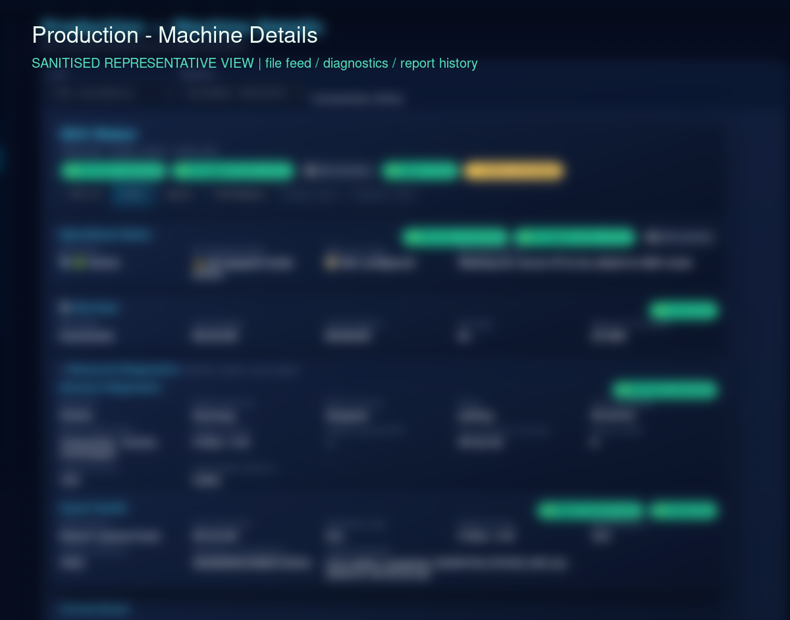

BTC Production Intelligence Suite
A modular browser-based operations platform for production status, machine events, shift reporting, packet traceability, technician activity and operational reporting.

PROJECT OVERVIEW
The suite brings several operational views into one authenticated web application. Its public-safe description is based on the maintained BTC-Suite implementation and documentation; private records and deployment details remain outside this page.
Current surfaces include dashboard and production views, report generation, machine and technician workflows, QR / Data Matrix packet paths, stock and HR / OPS modules, and local operational storage.
THE PROBLEM
Production information arrived through separate machine exports, event streams, reports and manual workflows. The engineering problem was to provide a shared operational view while keeping context, history, recovery conditions and incomplete data visible for human review.
HOW IT IS USED
An authorised operator opens the browser dashboard to review current line context and production information, then moves into reports or machine-specific views when a question needs historical detail. Technicians use the support surfaces to inspect machine events and faults; packet and QR workflows connect a physical packet identity to a controlled information lookup. The public site shows only the workflow shape, not live factory data.
PROJECT EVIDENCE
Sanitized screenshots from the working system show the operational dashboard, machine-level workflow, reporting surface and technician support path. Values, identifiers and operational records are removed or blurred; the authored hero artwork is not used as evidence.




HOW IT WORKS
The public architecture is a source-to-decision flow: local operational inputs and shift actions are parsed into validated context, persisted in the operational store, then projected into dashboards, reports and mobile-support workflows.
ENGINEERING HIGHLIGHTS
- Modular Flask services expose distinct operational surfaces without collapsing every workflow into one screen.
- SQLite-backed reporting, archive and indexing paths keep local operational history available to the application.
- QR / Data Matrix packet identity and technician workflows connect operational context to practical support decisions.
- Recovery and incomplete-data states remain visible instead of being silently presented as complete.
- Report and export paths are derived from the maintained reporting model rather than an unrelated presentation-only dataset.
CURRENT CAPABILITIES
- Browser dashboard, production and reporting pages.
- Machine-event, shift-report and technician-support workflows.
- QR / Data Matrix packet paths and operational context lookup.
- Local SQLite storage, dataset ingestion and report/archive handling.
- Operational modules for production, reports, technicians, HR / OPS, stock and related support areas.
POTENTIAL / NEXT APPLICATIONS
Could be extended to provide approved multi-line adapters, stronger deployment-state observability and role-specific reporting packages. Potential applications include a governed plant-wide operations console, controlled maintenance handover and reviewable cross-line trend analysis. The architecture could be adapted for other local-first industrial environments after source contracts, security and acceptance evidence are agreed.
TECHNOLOGY
Verified project-specific stack: Python, Flask, SQL / SQLite, browser-based HTML / CSS / JavaScript surfaces, QR / Data Matrix workflow integration, local file and dataset processing, and report/export tooling.
LIMITATIONS / PRIVACY
This is a private implementation. No factory hosts, credentials, employee information, network details, live production values or proprietary records are published. The public page does not claim deployment acceptance, physical-device validation or unrestricted offline operation.
RELATED PROJECTS / LINKS
Continue through the integration and traceability boundaries.
NEXT: INDUSTRIAL SYSTEMS INTEGRATION